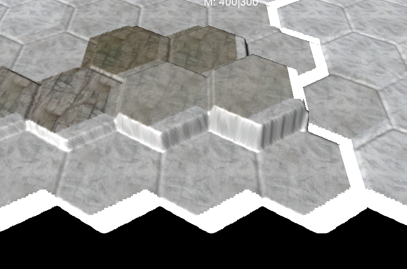
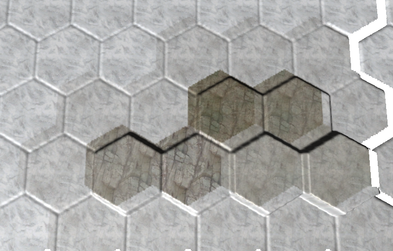

Hello again,
sadly I have encountered another problem with my terrain where I am out of ideas.
In addition to the heightmap I have created a colormap with the same size - for testing purposes I used it with the default TerrainBlend material as weight map. And it almost works perfectly, however the texture becomes more and more offset the further bottom/right I go.
I had thought of two potential issues, though neither of them changed anything:
-> The height/colormap are NPOT (currently 2165x1192, resizing them to 2048x2048 changed nothing)
-> The texture2d sampling in the shader gets imprecise coordinates (changing vTexCoord and vDetailTexCoord to highp changed nothing)
Here are some pictures:
Near the top left, offset is quite small (slopes should have the same texture as the top)

Bottom edge of the terrain, issue becomes very visbile (also artifacts on the terrain edge, apparently trying to sample the undefined parts of the colormap)


Thanks in advance!